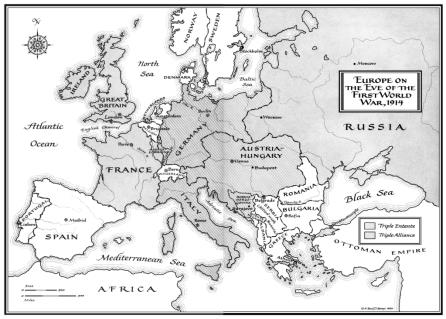
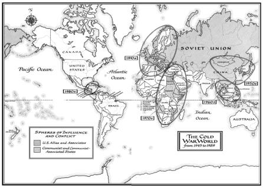
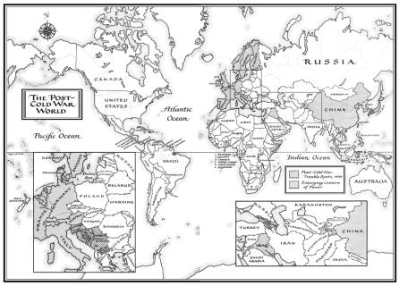

THE BALANCE OF POWER PETRIFIES When war broke out in 1914, the Franco-Russian Alliance was already twenty-three years old, and the Austro-German Alliance was thirtv-five years old. A newcomer to Continental alliances. Great Britain joined the Franco-Russian bloc with agreements in 1904 and 1907. Both alliances were entangled in Europe’s trouble spots, most fatefully in the Balkans, so that a minor conflict had the potential to draw all the Great Powers into war.

COLD WAR SPHERES OF INFLUENCE In the years following 1945, the United States and the Soviet Union established spheres of influence in Europe. In the 1950s, spheres were consolidated in Northeast Asia. In the 1960s, the theater of competition moved to Southeast Asia, where spheres were eventually consolidated. In the 1970s, the two superpowers battled for influence in the Middle East and Africa; in the 1980s, in Central America.

THE POST-COLD WAR WORLD With the collapse of the Soviet sphere of influence in 1989, new instability has emerged in Central Asia, the Caucasus, the Persian Gulf, the Horn of Africa, and the Balkans. In the meantime, new power centers have developed in Japan, China, and Western Europe, making for a multipolar world.